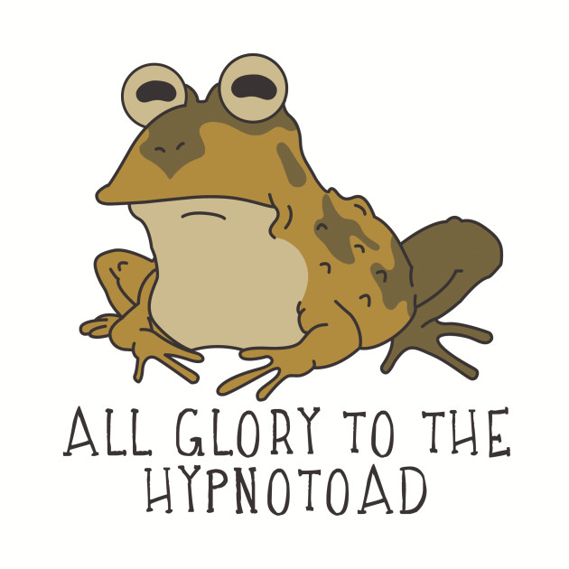

Jeremy Fischer
Mechanical Engineering Major from Central Pennsylvania. Was the original organizer for the Elder Scrolls Book Project. Contributed (what you contributed to the project). Hobbies and interests include, Solidworks 3D Modeling, Mountain Biking, Creating Rap Music, and playing Elder Scrolls games.
Joel Watson
Hello, I'm Digital Arts, Media, and Technology Major from Central Pennsylvania. My hobbies include Video Games and Music, and I'm interested in the production of both. My dream job is one that involves music composition for a triple-a title. What did I do for this project? other than the first schema, I'm not too sure yet, we'll see when it's all said and done.
Isaac Esterline
Hey! I'm a Digital Arts, Media and Technology at Pennstate Behrend. I'm primarily a digital content creator who loves photography, videography and digital design. I hope to someday work in the digital content creation industry as a professional videographer and editor. I also love website development which lead me to my role on this team as the web dev.